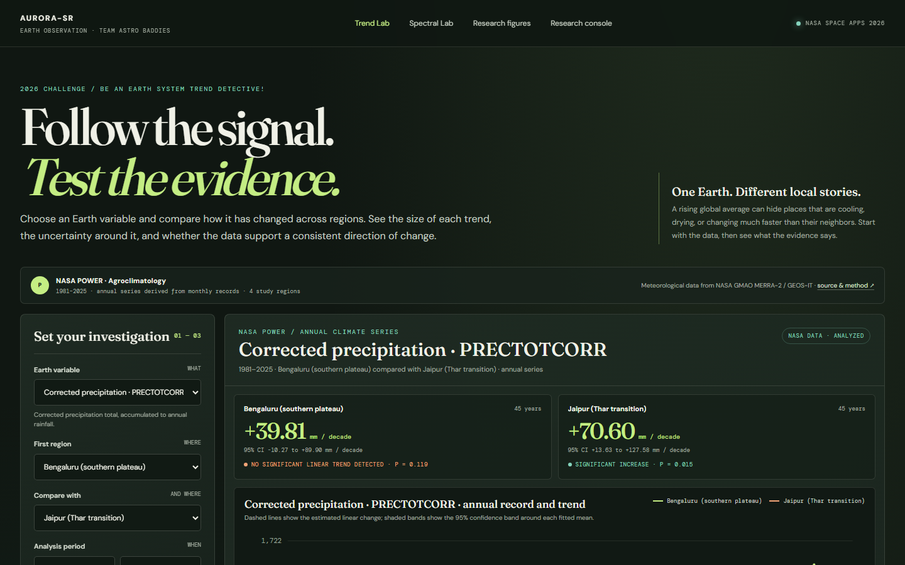
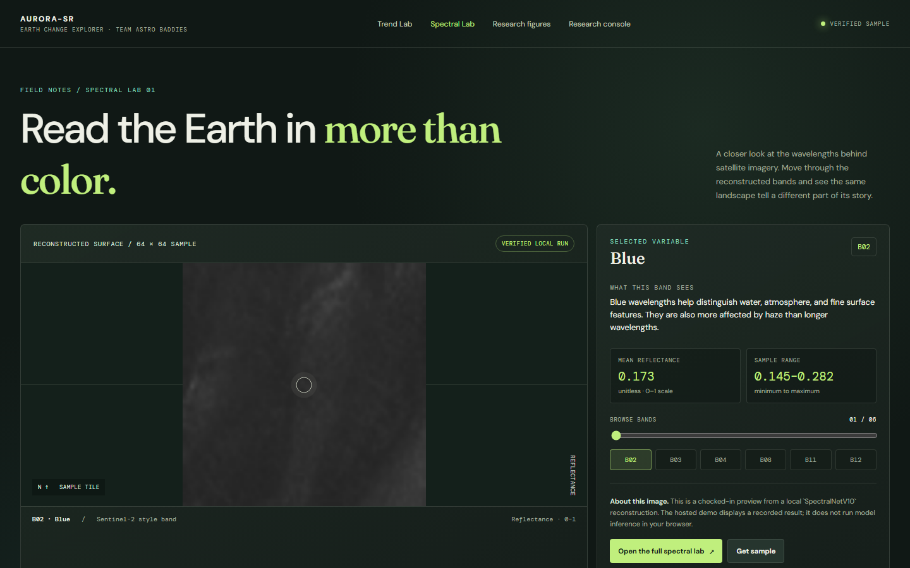
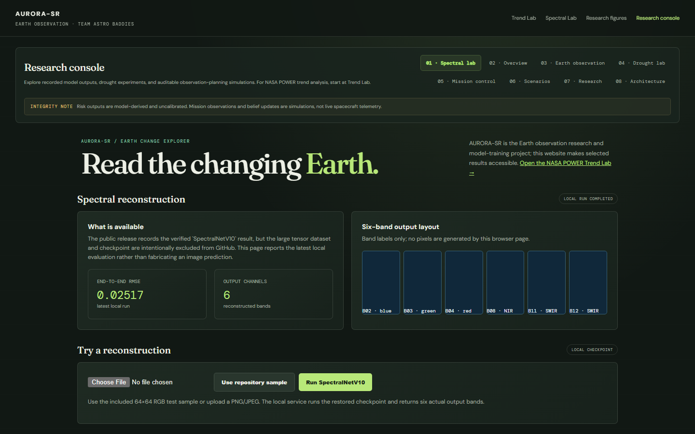
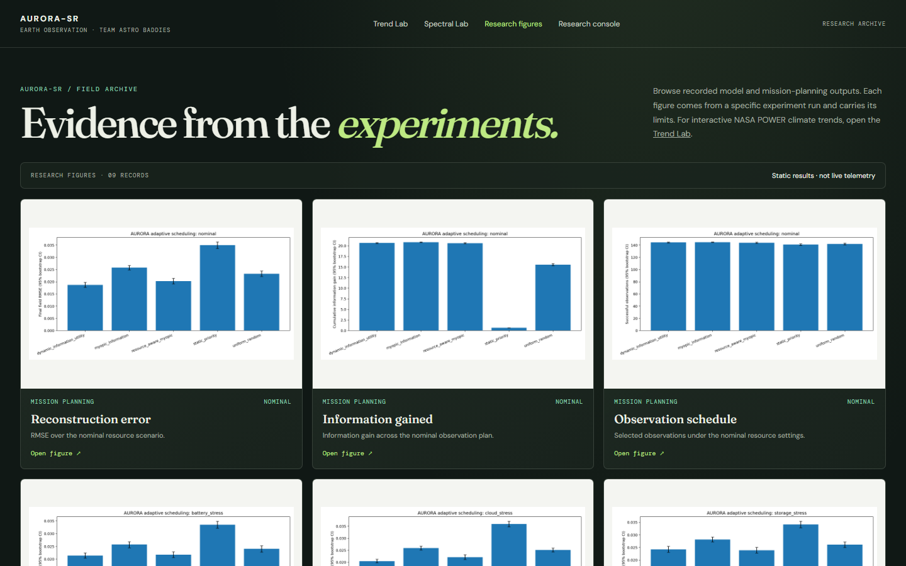

A research project joining NASA POWER climate history, satellite surface signals, and models for drought analysis and spectral reconstruction.
A broad average can hide places that are warming, cooling, drying, or changing at different rates. The question is not just whether a value moved, but where, by how much, and with what evidence.
The Trend Lab uses a bundled annual series derived from NASA POWER monthly Agroclimatology records. It lets a visitor inspect two selected Indian grid points side by side.


SpectralNetV10 maps RGB input to six Sentinel-2-style bands: B02, B03, B04, B08, B11, and B12. These bands support vegetation and moisture features used in a separate drought-classification research path.


Shows bundled trend data and selected model examples, with methods and caveats for review.
The hosted site does not query NASA or Sentinel-2 live or run model inference. Training and full research runs stay in Python; planner views are simulations, not spacecraft operations.
AURORA-SR brings NASA POWER climate history, Sentinel-2 surface observations, and model research into one project. Its purpose is to help people examine regional environmental signals and understand what the evidence can support.